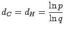
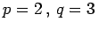
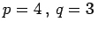
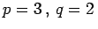
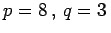

Inhalt Index DeskTop Bronstein

 Dynamische Systeme und Chaos Quantitative Beschreibung von Attraktoren Dimensionen Metrische Dimensionen
Dynamische Systeme und Chaos Quantitative Beschreibung von Attraktoren Dimensionen Metrische Dimensionen


Einer Reihe geometrischer Figuren, die man selbstähnlich nennt, liegt folgende Entstehungsprozedur zugrunde: Eine Ausgangsfigur wird durch eine neue Figur ersetzt, die aus p mit dem Faktor q > 1 linear skalierten Kopien der Ausgangsfigur besteht. Alle im k-ten Schritt vorhandenen k-fach skalierten Ausgangsfiguren werden jeweils wie im ersten Schritt behandelt.
Für die in den folgenden Beispielen A bis D genannten Mengen gilt .
| Beispiel A |
|
CANTOR-Menge: . |
| Beispiel B |
|
KOCHsche Kurve: . Die ersten 3 Schritte sind in der folgenden Abbildung zu sehen. |
| Beispiel C |
|
SIERPINSKI-Drachen: . Die ersten 3 Schritte zeigt die folgende Abbildung. Die weißen Dreiecke werden jeweils entfernt. |
| Beispiel D |
|
SIERPINSKI-Teppich: . Die ersten 3 Schritte zeigt die folgende Abbildung. Die weißen Quadrate werden entfernt. |